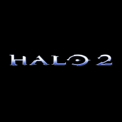

Halo 2 Demo
Even though the release of Halo 2 is over two months away we got the chance to try it out at Gamestars Live in London
By CESPage.com Xbox, Published 5th September 2004
At the biggest gaming event in the UK, Gamestars Live there was chance to be one of the first to play Halo 2 multiplayer and we were there.
Multiplayer
CESPage.com Xbox arrived at Gamestars Live when it opened and after a wait of about 90 minutes came to chance to play the game. The demo was the map Zanzibar and the game type Single Flag CTF, the demo had been set to the wrong mode for the first few says but these problems had been resolved. The Bungie Bunker held the game and it was two teams of five - Spartans and the other Elites, we were part of the Elites team.
Gameplay
The game was set for a five minute Single Flag, Capture the Flag game on the Zanzibar map as previewed at E3 in the United States. The start of the game we hopped
into an awaiting Warthog and drove into the base from the beach into the main part of the complex and jumped out. There were a few weapons about and a chance to
try out Duel Wielding with a SMG and Needler and jumped into the main complex with a rather high jump. First of all other Elites were after the Flag and we were
covering as the flag was obtained. After taking down one of the opposition a Spartan tossed a grenade and it was back to the beach after re-spawning.
We wandered back to the main part of the structure and shot again with a Duel Wielded Pulse weapon and Battle rifle and managed to take down another Spartan and
also run into the base and defend the other Elites.
After being killed it was then we were able to penetrate the base once again and make a run for the main complex where the flag was kept a fellow Elite ran out with
the flag and we helped defend the flag carrier as they succeeded in winning some points.
A lucky Spartan on the other team ran towards and threw a grenade and shot their weapon it was another kill for them but we had helped our team score with the Flag.
Another attempt was made and we covered from the front with some Sniping with the Sniper rifle as well as exploring some of the approach to the map and discovering
some great positions for sniping and sneaking round any defences - however the game was all too short but we had succeeded with winning the match.
Opinions
Even though it was a short game there was the chance to shoot from the Warthog which was effective at keeping the opposition away it also highlights a feature from Multiplayer is that someone can be driver while another shoots from the side or launch rockets from the back. The duel wielding feature is fantastic it was very easy to get to grips with this and fire each weapon with both triggers at the same time to take down an opponent, it can be sometimes more effective with this than a seemingly more powerful weapon like the Sniper Rifle. With plenty of places to hide, snipe or sneak with many techniques and ways of approaching this map made it a very enjoyable game and could last a lot longer without it being too repetitive - this is looking like the game we all expect it to be and when November comes it is going to be even better...